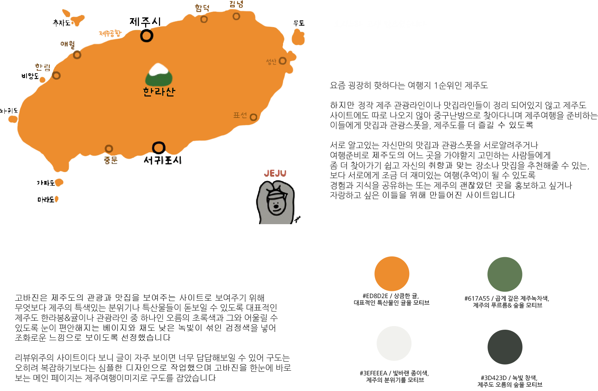

고바진 사이트는 제주도 여행에 가고싶은 곳, 지역을 체험해본 사람들의 리뷰
내가 몰랐었던 지역 등 곳곳마다 알지 못한 '숨겨진' 장소를 알려주기 위한 사이트 입니다
커뮤니티를 통해 전달되는 숨겨진 멋진 장소를 확인해보세요
다른 이들을 통해 소식을 듣다.
제주의 대표적인 광광을 알리는 아이콘
제주에서만 볼 수 있는 장소를 특징한다.

고바진은 단신의 이런 고민을 들어들이기 위해 만들어진 제주도 관광&맛집 리뷰 사이트 입니다
고민하실 때 고바진을 이욯해 다양한 곳을 방문해 다른 이들에게도 알려주세요!